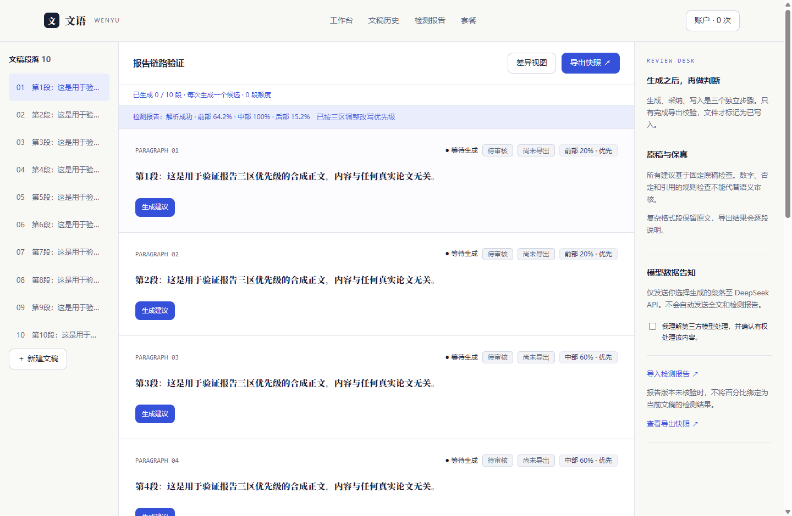
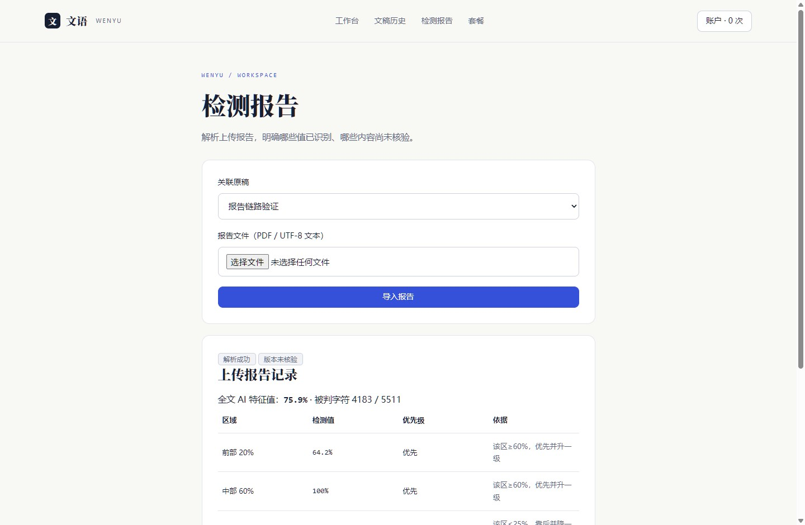
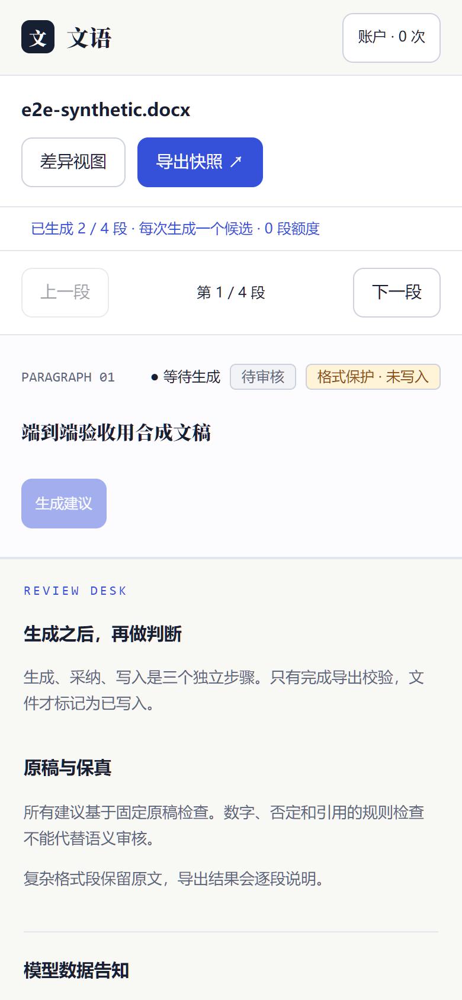

检测报告定位
读取全篇数值与前部/中部/后部三区比例；区域标签不会被当成检测值，缺失就留空。报告版本与稿件不一致时不做定向。
每一项都标注了当前状态：可用＝已用合成数据验收；内测＝仅受邀账户；未开放＝尚未实现或未过验收。
读取全篇数值与前部/中部/后部三区比例；区域标签不会被当成检测值，缺失就留空。报告版本与稿件不一致时不做定向。
一次只生成一个候选，附数字、引用、否定、术语与长度比检查。多候选批量生成未开放。
词级 LCS 对比原文与改文，删除与新增分开标注，不是整段并排。
采纳前需要确认事实、引用与术语；采纳不等于写入文件，导出才写。
含公式、超链接、域、修订、宏的段落整段保留原文；加粗术语与上标引用走 run 级映射。
每次导出生成固定版本与哈希，下载前校验；同一原稿与同一决策导出结果逐字节一致。
真实账户、会话、CSRF、跨用户隔离已有测试；额度按段落计。
只做订单模型与适配层（外部订单号、状态、幂等、退款、对账），未接真实平台交易。
尚未开通，也没有任何收费入口。本页不提供付款方式。
以下截图来自隔离测试环境，文稿为完全虚构的合成文本，不含任何真实论文、检测报告或用户资料。



流程里没有"一键变好"这一步，每一步都要你确认。
| 项目 | 当前支持 |
|---|---|
| 文稿 | .docx（文字型）；不支持扫描件、宏、嵌入对象、外部资源 |
| 报告 | 文本层 PDF、UTF-8 TXT；不支持加密 PDF、扫描图片 |
| 单篇规模 | ≤ 100,000 字 · ≤ 2000 段 · 上传 ≤ 8MB |
| 单段改写 | 20–3000 字；超长段落需先手动拆分 |
| 导出 | Word（.docx）；复杂结构段落会保留原文并逐段说明 |
| 数据保留 | 默认 7 天，可随时删除；删除后内容与文件一并清除 |
测试名额有限，优先给"有真实稿件、愿意反馈问题"的人。测试期免费，功能可能随时回滚。
| 项目 | 说明 |
|---|---|
| 开放范围 | 仅受邀测试账户；本页不提供注册与上传 |
| 收费 | 测试期免费；在线支付未开通 |
| 模型 | 仅将你选择的段落发送至第三方模型接口，不发送全文与报告 |
| 运营者 | 个人开发者（个人主体；网站备案办理中） |
| 客服与投诉 | 1502697204@qq.com（投诉处理时限将在正式开放前确认并写明） |
| 站点域名 | wenyutext.site（备案完成后启用 HTTPS） |
按当前计划，正式开放前需要完成：备案主体与网站备案、AI 相关登记确认、支付渠道准入核验、隐私与协议定稿。缺任何一项都不会开放上传入口。